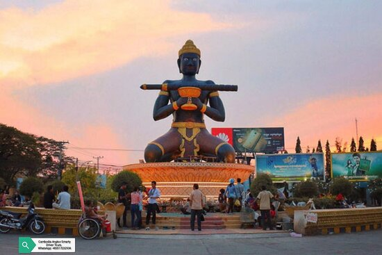

Battambang is a province of Cambodia in the far northwest of the country. Bordering provinces are Banteay Meanchey to the north, Pursat to the east and south, Siem Reap to the northeast, and Pailin to the west. The northern and southern extremes of the province's western boundaries form part of the international border with Thailand. In addition, Tonlé Sap forms part of the northeastern boundary between Siem Reap and Pursat. Its capital and largest city is Battambang.
It is the fifth most populous province in Cambodia. In land area, Battambang is the fifth largest province of Cambodia. Battambang is one of the provinces included in the Tonle Sap Biosphere Reserve. The province's fertile rice fields have led to a mostly agricultural economy giving rise to the moniker "the rice bowl of Cambodia". The province features a range of cultures as well as natural resources. Seventy five percent of the area is jungles and mountains. The area has a tropical climate.
